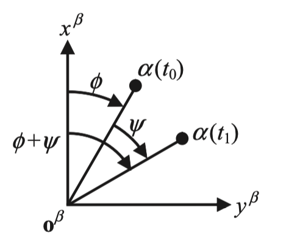

Kinematics: 2.1 Transformation and Rotation Matrices
Direction Cosine Matrix
Let \(\mathbf{x} \in \mathbb{R}^3\) be an arbitrary vector and \(\alpha\) and \(\beta\) be coordinate frames defined by set of orthonormal base vectors \( \left[ \begin{array}{ccc} \mathbf{u}_{\alpha x} & \mathbf{u}_{\alpha y} & \mathbf{u}_{\alpha z} \end{array} \right] \) and \( \left[ \begin{array}{ccc} \mathbf{u}_{\beta x} & \mathbf{u}_{\beta y} & \mathbf{u}_{\beta z} \end{array} \right] \) respectively. Let \(\mathbf{x}^{\alpha} = \left[ \begin{array}{ccc} x^{\alpha}_1 & x^{\alpha}_2 &x^{\alpha}_3 \end{array} \right] \) be the coordinates of \(\mathbf{x}\) resolved in frame \(\alpha\) and \(\mathbf{x}^{\beta} = \left[ \begin{array}{ccc} x^{\beta}_1 & x^{\beta}_2 &x^{\beta}_3 \end{array} \right] \) be the coordinates of \(\mathbf{x}\) resolved in frame \(\beta\). Vector \(\mathbf{x}\) can be expressed as: $$ \left[ \begin{array}{ccc} \mathbf{u}_{\beta x} & \mathbf{u}_{\beta y} & \mathbf{u}_{\beta z} \end{array} \right] \left[ \begin{array}{c} x^{\beta}_1 \\ x^{\beta}_2 \\ x^{\beta}_3 \end{array} \right] = \left[ \begin{array}{ccc} \mathbf{u}_{\alpha x} & \mathbf{u}_{\alpha y} & \mathbf{u}_{\alpha z} \end{array} \right] \left[ \begin{array}{c} x^{\alpha}_1 \\ x^{\alpha}_2 \\ x^{\alpha}_3 \end{array} \right] \tag{2.1.1} $$ Multiplying both sides by \( \left[ \begin{array}{ccc} \mathbf{u}^T_{\beta x} & \mathbf{u}^T_{\beta y} & \mathbf{u}^T_{\beta z} \end{array} \right]^T \), we get: $$ \left[ \begin{array}{c} x^{\beta}_1 \\ x^{\beta}_2 \\ x^{\beta}_3 \end{array} \right] = \left[ \begin{array}{ccc} \mathbf{u}^T_{\beta x} \cdot \mathbf{u}_{\alpha x} & \mathbf{u}^T_{\beta x} \cdot \mathbf{u}_{\alpha y} & \mathbf{u}^T_{\beta x} \cdot \mathbf{u}_{\alpha z} \\ \mathbf{u}^T_{\beta y} \cdot \mathbf{u}_{\alpha x} & \mathbf{u}^T_{\beta y} \cdot \mathbf{u}_{\alpha y} & \mathbf{u}^T_{\beta y} \cdot \mathbf{u}_{\alpha z} \\ \mathbf{u}^T_{\beta z} \cdot \mathbf{u}_{\alpha x} & \mathbf{u}^T_{\beta z} \cdot \mathbf{u}_{\alpha y} & \mathbf{u}^T_{\beta z} \cdot \mathbf{u}_{\alpha z} \\ \end{array} \right] \left[ \begin{array}{c} x^{\alpha}_1 \\ x^{\alpha}_2 \\ x^{\alpha}_3 \end{array} \right] \tag{2.1.2} $$ Let \(\mathbf{C}^{\beta}_{\alpha}\) denote the direction cosine matrix (DCM). Then: $$ \mathbf{C}^{\beta}_{\alpha} = \left[ \begin{array}{ccc} \mathbf{u}^T_{\beta x} \cdot \mathbf{u}_{\alpha x} & \mathbf{u}^T_{\beta x} \cdot \mathbf{u}_{\alpha y} & \mathbf{u}^T_{\beta x} \cdot \mathbf{u}_{\alpha z} \\ \mathbf{u}^T_{\beta y} \cdot \mathbf{u}_{\alpha x} & \mathbf{u}^T_{\beta y} \cdot \mathbf{u}_{\alpha y} & \mathbf{u}^T_{\beta y} \cdot \mathbf{u}_{\alpha z} \\ \mathbf{u}^T_{\beta z} \cdot \mathbf{u}_{\alpha x} & \mathbf{u}^T_{\beta z} \cdot \mathbf{u}_{\alpha y} & \mathbf{u}^T_{\beta z} \cdot \mathbf{u}_{\alpha z} \\ \end{array} \right] = \left[ \begin{array}{ccc} cos \mu_{\beta_x \alpha_x} & cos \mu_{\beta_x \alpha_y} & cos \mu_{\beta_x \alpha_z} \\ cos \mu_{\beta_y \alpha_x} & cos \mu_{\beta_y \alpha_y} & cos \mu_{\beta_y \alpha_z} \\ cos \mu_{\beta_z \alpha_x} & cos \mu_{\beta_z \alpha_y} & cos \mu_{\beta_z \alpha_z} \\ \end{array} \right] \tag{2.1.3} $$
Transformation and Rotation Matrix
Special orthogonal group is a Lie group that consists of orthonormal matrices that provide distance-preserving transformations of a Euclidean space. It is defined as: $$ SO(n) = \left\{ \mathbf{R} \in \mathbb{R}^{n \times n} \ | \ \mathbf{R} \mathbf{R}^T = \mathbf{R}_{n \times n}, \ det(\mathbf{R}) = 1 \right\}. \tag{2.1.4} $$ Any matrix \(\mathbf{R} \in SO(3)\) including DCMs is a 3D coordinate transformation matrix. It is important to distinguish between two types of transformations:
- Passive transformation - Rotations of the coordinate system while the objects stays fixed.
- Active transformation - Rotation of the object (e.g., vector) while the coordinate system stays fixed.
Consider two coordinate frames \(\alpha\) and \(\beta\). Then, the transformation matrix from \(\beta\) to \(\alpha\) is \(\mathbf{R}^{\alpha}_{\beta}\). Inverse or transpose of \(\mathbf{R}^{\alpha}_{\beta}\) represents the inverse transformation: $$ \mathbf{R}^{\alpha}_{\beta} = \left(\mathbf{R}^{\beta}_{\alpha} \right)^T = \left(\mathbf{R}^{\beta}_{\alpha} \right)^{-1}. \tag{2.1.5} $$ Rotation matrices are inverse/transpose of transormation matrices. Successive transformation can be performed by chaining the transformation matrices: $$ \mathbf{R}^{\gamma}_{\alpha} = \mathbf{R}^{\gamma}_{\beta} \mathbf{R}^{\beta}_{\alpha}. \tag{2.1.6} $$ Let \(\mathbf{M}\) be a rotation matrix that transforms a vector \(\mathbf{a}\) into a vector \(\mathbf{b}\): $$ \begin{align*} \mathbf{b}^{\alpha} &= \mathbf{M}^{\alpha} \mathbf{a}^\alpha \\ \mathbf{b}^{\beta} &= \mathbf{M}^{\beta} \mathbf{a}^\beta \end{align*} \tag{2.1.7} \label{2.1.7} $$ A transformation matrix then can be used to transform \(\mathbf{M}\) to which specific resolving axes apply. Substituting one to another in \(\ref{2.1.7}\): $$ \mathbf{R}^{\alpha}_{\beta} \mathbf{b}^{\beta} = \mathbf{M}^{\alpha} \mathbf{R}^{\alpha}_{\beta} \mathbf{a}^{\beta}. \tag{2.1.8} $$ Premultiplying by \(\mathbf{R}^{\beta}_{\alpha}\): $$ \mathbf{M}^{\beta} = \mathbf{R}^{\beta}_{\alpha} \mathbf{M}^{\alpha} \mathbf{R}^{\alpha}_{\beta}. \tag{2.1.9} $$ Transformation and rotation matrices has nine elements but 3D coordinate transformation only has 3 degrees of freedom (DOF). Hence axis-angle representation is preferred.
Rotation Matrix Derivation

Fig 2.1 Rotation about \(z^\beta \) (source Groves, p31)
Let \( \beta \) be a Cartesian coordinate frame with axes \((x^\beta, y^\beta, z^\beta)\). Consider a vector with a fixed length, \(r_{\beta \alpha} \) from the origin of frame \( \beta \) to a point, \( \alpha \), that has rotated about the \(z^\beta \) by angle \( \psi \). Fig 2.1 shows the position of the vector at times \(t_0 \) (pre-rotation) and \(t_1 \) (post-rotation). At \(t_0\), the position of \(\alpha \) with respect to the origin of frame \(\beta \) and resolved about the axes of \(\beta \) can be described by: $$ \begin{align} x^{\beta}_{\beta \alpha} (t_0) &= r_{\beta \alpha} cos(\phi) \\ y^{\beta}_{\beta \alpha} (t_0) &= r_{\beta \alpha} sin(\phi) \\ z^{\beta}_{\beta \alpha} (t_0) &= z^{\beta}_{\beta \alpha} (t_0) \end{align} \tag{2.1.10} \label{2.1.10} $$ At \(t_1\), the vector rotates about \(z^\beta \) by angle \(\psi\): $$ \begin{align} x^{\beta}_{\beta \alpha} (t_1) &= r_{\beta \alpha} cos(\phi + \psi) = r_{\beta \alpha}cos(\phi)cos(\psi) - r_{\beta \alpha}sin(\phi)sin(\psi)\\ y^{\beta}_{\beta \alpha} (t_1) &= r_{\beta \alpha} sin(\phi + \psi) = r_{\beta \alpha}sin(\phi)cos(\psi) + r_{\beta \alpha}cos(\phi)sin(\psi) \\ z^{\beta}_{\beta \alpha} (t_1) &= z^{\beta}_{\beta \alpha} (t_0) \end{align} \tag{2.1.11} \label{2.1.11} $$ Combining \(\ref{2.1.10}\) and \(\ref{2.1.11}\): $$ \begin{align} x^{\beta}_{\beta \alpha} (t_1) &= x^{\beta}_{\beta \alpha} (t_0) cos(\psi) - y^{\beta}_{\beta \alpha} (t_0) sin(\psi) \\ y^{\beta}_{\beta \alpha} (t_1) &= x^{\beta}_{\beta \alpha} (t_0) sin(\psi) + y^{\beta}_{\beta \alpha} (t_0) cos(\psi) \\ z^{\beta}_{\beta \alpha} (t_1) &= z^{\beta}_{\beta \alpha} (t_0), \end{align} \tag{2.1.12} $$ We can use similar analogy to obtain three rotation matrices: $$ \begin{align} \mathbf{R}_z(\psi) &= \left[ \begin{array}{ccc} cos(\psi) & -sin(\psi) & 0 \\ sin(\psi) & cos(\psi) & 0 \\ 0 & 0 & 1 \end{array} \right] \\ \\ \mathbf{R}_y(\theta) &= \left[ \begin{array}{ccc} cos(\theta) & 0 & sin(\theta) \\ 0 & 1 & 0 \\ -sin(\theta) & 0 & cos(\theta) \end{array} \right] \\ \\ \mathbf{R}_x(\phi) &= \left[ \begin{array}{ccc} 1 & 0 & 0 \\ 0 & cos(\phi) & -sin(\phi) \\ 0 & sin(\phi) & cos(\phi) \end{array} \right] \\ \end{align} \tag{2.1.13} $$
Homogeneous Coordinates
Special Euclidean group is a group is defined as: $$ SE(3) = \left\{ \mathbf{T} = \left[ \begin{array}{cc} \mathbf{R} & \mathbf{t} \\ \mathbf{0}^T & 1 \end{array} \right] \in \mathbb{R}^{4 \times 4} \ | \ \mathbf{R} \in SO(3), \ \mathbf{t} \in \mathbb{R}^3 \right\}. \tag{2.1.14} $$ Any matrix \(\mathbf{T} \in SE(3)\) is a 4D transformation matrix (in homogeneous coordinates) that applies transformation and translation simultaneously. Inverse of \(\mathbf{T}\) represents an inverse transformation: $$ \mathbf{T}^{-1} = \left[ \begin{array}{cc} \mathbf{R}^T & -\mathbf{R}^T \mathbf{t} \\ \mathbf{0}^T & 1 \end{array} \right]. \tag{2.1.15} $$ Transformation matrix has 16 elements but 3D coordinate transformation and translation has only 6 DOF. Hence axis-angle representation is preferred.